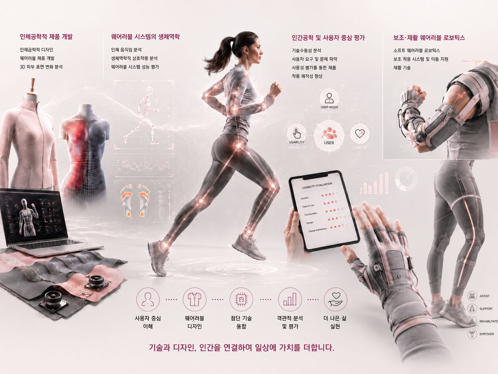

Introduction
The Wearable Design & Tech Convergence Lab (WearTech Lab) integrates design, ergonomics, and advanced technologies to develop wearable products and systems for safer and more comfortable living. We analyze biomechanical interactions between the body and wearable products and evaluate user needs, usability, wearability, and technology acceptance to create solutions that users can naturally adopt. Our research focuses on assistive products for physical function and mobility, soft wearable robots for rehabilitation, and practical wearable solutions for assistance, rehabilitation, safety, health management, and daily living support.
웨어러블 디자인 & 테크 융합 연구실은 사용자와 인체에 대한 이해를 바탕으로 디자인, 인간공학 및 첨단기술을 융합하여 더 안전하고 편안한 삶을 위한 웨어러블 제품과 시스템을 연구합니다. 착용형 제품과 인체 사이의 생체역학적 상호작용과 시스템 성능을 분석하고, 사용자 요구, 사용성, 착용성 및 기술수용성을 평가하여 실제 사용자가 자연스럽게 받아들일 수 있는 제품 개발을 지향합니다. 주요 연구 분야는 신체 기능 및 이동 보조 제품, 재활을 위한 소프트 웨어러블 로봇, 보조, 재활, 안전, 건강관리 및 일상생활 지원을 위한 실용적인 웨어러블 솔루션을 개발합니다.
Research Field
- Ergonomic Product Development
- Ergonomic design; Wearable product development; 3D skin surface change analysis
Biomechanics of Wearable Systems
- Human movement analysis; Biomechanical interaction analysis; Wearable system performance evaluation
Human Factors and User-Centered Evaluation
- Technology acceptance analysis; User needs and problem identification; Enhancement of user comfort for products through usability assessment
Assistive and Rehabilitative Wearable Robotics
- Soft wearable robotics; Assistive wearable systems and mobility support; Rehabilitation technologies
